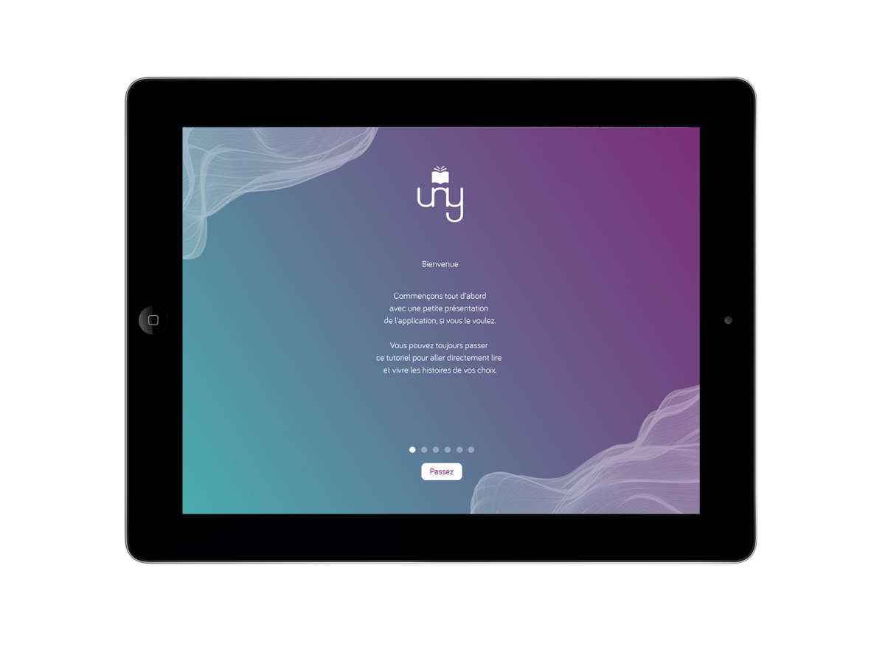

Introduction
Suite à mon mémoire, j’ai choisi de créer une application qui recenserait toutes les oeuvres littéraires connues et étudiées en classe pour permettre aux adolescents de s’immerger plus facilement. Et j’ai choisi d’appeler cette application UNY qui est un mélange entre « Young », « Unit » et « Story ».
Le choix de l'histoire
Pour un premier prototype il me fallait donc choisir une histoire, et j’ai choisi celle d’Hansel et Gretel que j’ai réécrits pour permettre aux adolescents de s’y reconnaitre plus facilement. Les deux protagonistes sont donc plus âgés et habitent dans une banlieue de New York, avec un père divorcé et une belle-mère peu sympathique.
La création
Les « mondes » leur permettent de choisir la catégorie ou l’auteur qu’ils souhaitent et ainsi choisir leurs histoires. Ils peuvent facilement se déconnecter pour passer d’un compte à un autre. Entre frères et soeurs par exemple. Beaucoup de fonctionnalités sont présentes dans l’application comme : le marque-page, le partage sur les réseaux sociaux, choisir la typographie ou les couleurs, et encore pleins d’autres.
